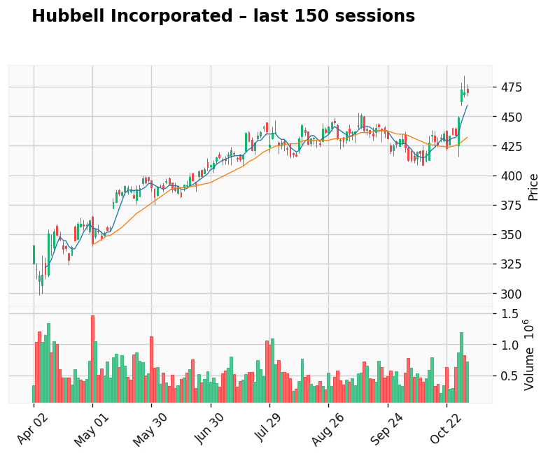
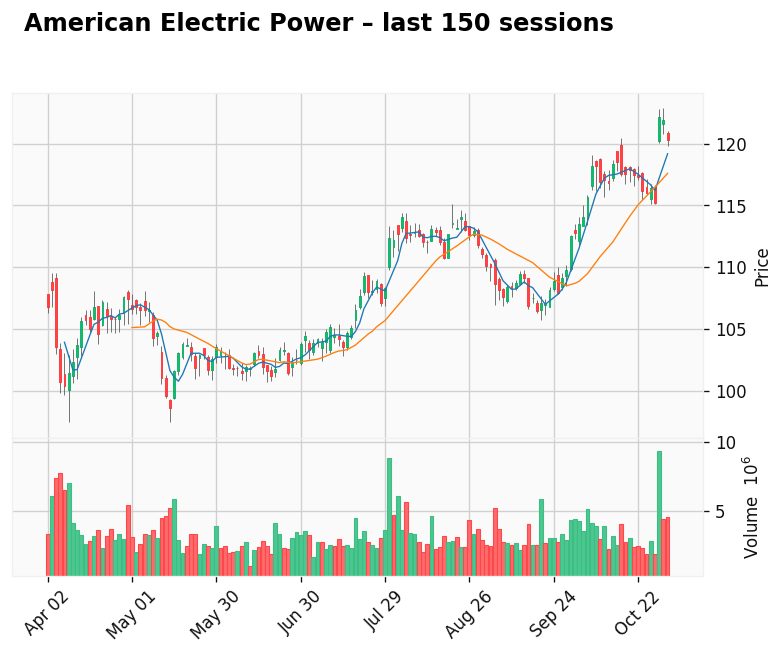

AI-generated analysis combining predictive modeling and recent market context.
Gap: 49.37% Candle: 70.48% (black)
Hubbell Hubbell Incorporated, a leading U.S. manufacturer of electrical and utility equipment, has entered a period of mild correction following its recent stock highs. Although the company’s third-quarter results showed stronger-than-expected earnings per share, the revenue came in slightly below Wall Street estimates at around $1.50 billion versus expectations of $1.53 billion. This softer top-line performance signaled to investors that growth momentum may be slowing after several quarters of strong expansion. The most concerning detail was the noticeable weakness in Hubbell’s Grid Automation segment, which recorded an estimated 18 percent decline in revenue. This is important because the unit had previously been one of the company’s main growth engines, tied to investments in smart grids and infrastructure modernization. The slowdown suggests that certain utility and industrial projects may be facing delays or reduced spending amid tighter budgets and macroeconomic uncertainty. Investor sentiment also turned cautious after the company issued new $400 million senior notes due in 2035 with a 4.8 percent coupon, replacing earlier debt with a lower interest rate. While the refinancing extends Hubbell’s maturity profile, it also raises financing costs and hints at a more expensive capital environment. Analysts note that the move could slightly pressure margins if cost inflation persists. Adding to the uncertainty, Hubbell announced that long-time Chief Financial Officer Bill Sperry will retire, with Joseph Capozzoli set to take over in 2026. Leadership transitions at this level often create a temporary overhang for investors, especially when they coincide with shifting market dynamics. Overall, Hubbell remains a strong industrial player with solid fundamentals, but after reaching record highs, the stock’s valuation and soft revenue trends have invited short-term profit-taking. The market is adjusting expectations as growth normalizes and higher borrowing costs, leadership changes, and weaker grid spending temper the near-term outlook. (70.48%, gap 49.37%). No fresh news available.
Gap: 2.79% Candle: 69.45% (black)
American Electric Power shows bearish sentiment again. more infoe in report on 04.11.25 (69.45%, gap 2.79%). No fresh news available.
